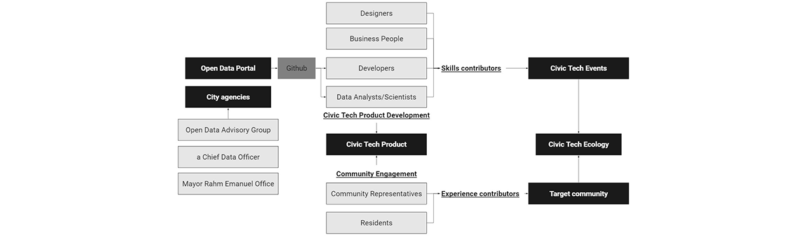
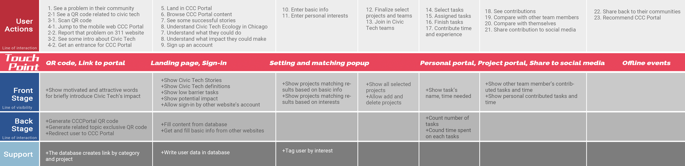
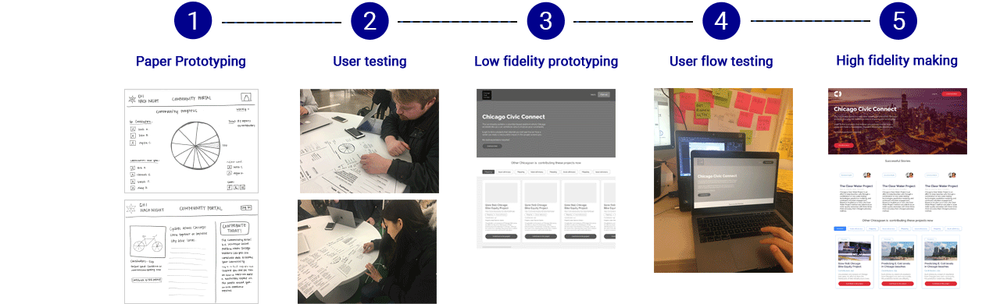
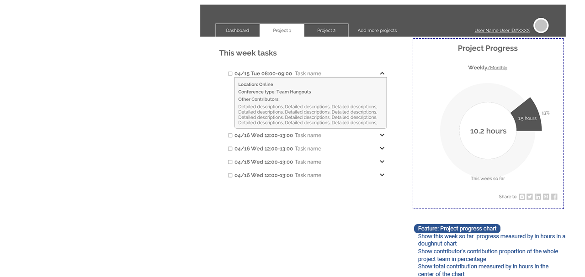
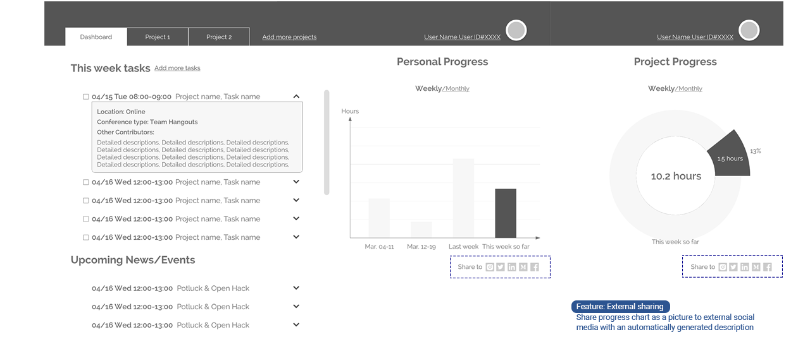
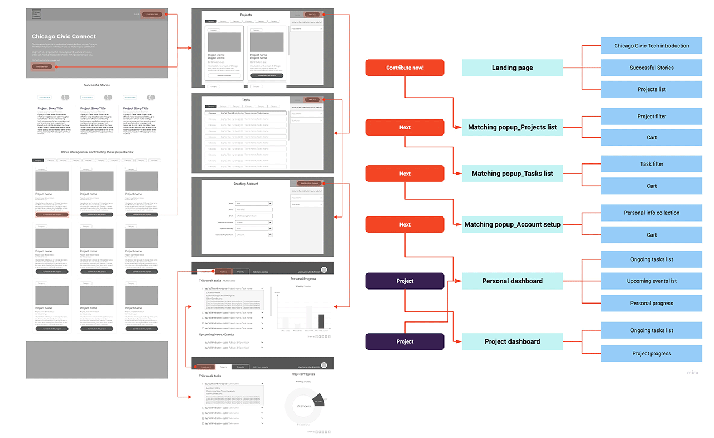

Faye Gong
Chicago is among the first cities in the US to engage Service Designers to understand stakeholder needs and design access to integrated services accessible across in-person, physical, phone, and digital platforms.
This studio project is an opportunity to explore civic service design, designing new ways for residents to access and engage with services provided by the City of Chicago.
Overview
PROJECT NAME
Chicago Civic Connect
PROJECT TYPE
City of Chicago Department of Innovation & Technology Human Centered Service Design Team Project
SCOPE
Start From Scratch
DELIVERABLES
Taglines on Zeplin to development
Illustrations
DURATION
2019.1-2019.3
TEAM
Brent Chase (CEO & PM)
Weekly studio course
Christy Zhang, Siqi Chen, Nech Kodi
Liz Gerber, Amy O'Keefe, Jason Kunesh
2019.1-2019.3
MY ROLE
Design Lead
MY WORK
User Researcher
Storyteller
Product Designer
UX Designer
# User Research #
# Product Design #
# UX and UI Design #
# Service Design #
Design Topic
Understanding a Welcome Service for Residents should be accessible, inclusive, innovative and engaging, we are going to focus on designing to meet the needs of [Civic technologists partnering with the city and the open data portal].
Challenge
While cities are built around services for residents, businesses, and visitors, the practice of Civic Service Design is in its earliest stages.
Understanding the opportunity space is critical since we believe that the best services are designed for real people in specific contexts.
As the project is moving forward, we need to continuously explore how the service we designed sets the tone for what it means to engage as a citizen.
Solution
Explore and design ways in which residents discover and engage with City services, ordinances, and opportunities delivered in an accessible, inclusive, and innovative manner.
1. Get Chicagoans the services they need. -Improve access to services for all Chicagoans.
2. Engage residents with their city and community.-Build and enrich communities that use services.
By:
#1 Civic Connect Portal
#2 Entrance on 311 report
#3 QR code in context
Research
#1 Experts interviews
with staffs from the city of Chicago
How we approached this broad objective, and what we did to gain insights. We connected and engaged with citizens in context through interviews and observation.
Civic Technology Ecology enables engagement, participation or enhances the relationship between the people and government.
Stakeholders Maps
Now the city of Chicago is providing data via the open data portal. People could search, download data they want. And the government could release the data after they received a request.
Insight 1: Growing wild
Civic tech projects are happening independently except getting dataset or API from the Chicago Open data portal.
Research
#2 Field Study
by immersive research in Civic Tech Events
We attended Chi Hack Night sessions weekly on Tuesday to understand the current user journey and tensions in Civic Tech project development experience.
Insight 2: Tech internal revelry
Although various background people are developing various topic projects, it seems like only techs show up in Chi hack night, so there is a gap between the tech community with residents.
Research
#3 Civic Technologists
individual interviews
Methods
Interception in civic tech events
Phone call informative interview
In person interview
Insight 3: Sustainability dilemma
Aligned with many efforts in developments, technologists know that without people from related communities their product would go a wrong path, but it's hard for them to make the residents and communities involved in their project.
Research
#4 Residents
Insight 4: High entry criterion
Although some residents eager to make an impact in their community, they assume they should know some tech knowledge or skills to be a part of Civic Tech. They don't know what they could bring to Civic Tech and what impact they could make.
Research
#5 Internal collaboration
with other teams
Three other teams focus on public service, immigrant family and disabled people. So we could find a matched community for reaching out potential motivated residents and unmet needs which could be solved by civic tech.
Insight 5: Civic Tech vacuum
Residents now even don't know that many civic tech groups are focusing on developing a product to solve their problems.
Needs Finding
#1 How might we
make the civic tech project more sustainable?
Problem Narrative
Now from idea formation to launching, the real resident's involvement is too little. As the primary users in the future, without their feedback during product development, the product would fail after launching since it didn't catch the user's needs.
Current Journey
Civic Tech Product Development
Since now there is a gap between civic tech and residents, so there is no current journey map.

Design Direction #1:
Bring more residents into civic tech product development
Needs Finding
#2 How might we
bridge the gap between civic tech and residents?
User Groups
Civic Technologists and Residents

Design Direction #2:
Make residents be aware of the importance of civic tech
Needs Wrap-up
How might we make residents more engaged in their community by involvement in civic tech project?
Integrated opportunity area
1. Engagement driven by motivation
Design Direction: Motivate residents to join in Civic Tech Projects by the successful cases of Civic Tech in Chicago.
2. Motivation driven by measurable comparison with themselves and others
Design Direction: Showing a precise measurement of their contribution to Civic Tech and engagement in their communities so that they are driven by improvement and comparison
3. Contribution driven by taking action on things with interests and experience matched
Design Direction: Make better projects and motivated residents matching. More matched, more engaged.
Ideal Journey Map
The service blueprint and Persona

Final Product Design
Design Process
User Class

1. Awareness of the existence of civic tech in Chicago
Touchpoint #1
Off-line QR code and flyers distribution in context

Strategy
There are three big parts on the flyer design, short introduction, what residents could contribute and website address.
The QR code would be put in context selected by the project lead and their project topics.
Touchpoint #2
Entrance on 311 websites and mobile end
Challenge 1
People’s motivation and ambition always calm down very quick
Insights 1
Now there is an online channel on the "311" website to report some issues. And reporters are usually someone very active in their communities.
Solution 1
Distribute entrance on those end
Strategy
Show entrance in 311 related websites and mobile app
A slogan focuses on a low barrier, big impact, and necessity
2. Getting motivation by successful stories
Touchpoint #3
Web Portal_Landing Page
Challenge 2
Residents don’t know what kind of impact they could do
Insights 2
There are a lot of successful stories generated from civic projects but now without good promotion and distribution
Solution 2
Show successful stories to residents
Strategy
Make successful stories in three columns
Show storytellers picture to make the story more real
Show more description to let the residents read without the need to click the story
3. Projects and tasks matching
Challenge 3
Encourage a resident transferring to a civic tech contributor
Now most of the residents don’t have experience or motivation to get in civic tech project
Insights 3
People are more likely to have the motivation to do something when they see familiar topics
Solution 3
Matching projects by interest and experience
Strategy
The need from civic tech leaders is that they need residents to do user research and user testing.
So I collect types of work they seek residents to do.
Touchpoint #3
Web Portal_Matching Popup
Goal
Bridge the gap between civic technologists and residents
Challenge 4
People concern they don’t have tech background and skills
Insights 4
There are some other works crucial and desired for a successful civic project
Solution 4
Provide some low barrier tasks without a need to join a team.

4. Contributing
Touchpoint #4
Online Calendar (eg. Google Calendar)
#4 Strategy
Integrated with online calendar to collect data
Steps based on google calendar
1. The project leader logs in by a google calendar bound email address
2. The project leader creates a team calendar and binds with Chicago Civic Connect
3. The project leader creates an event in a team calendar
4. The event shows up in Chicago Civic Connect as a task in the tasks list
5. The project leader assigns tasks to team contributors’ in Chicago Civic Connect by adding contributors’ personal id, divided by semicolon
6. The contributor receives a task in the tasks list
7. The contributor finishes the task online or offline
8. The task time has been calculated in the contributor's weekly contribution

5. Comparing and reflection
Challenge 5
Measurement: Personal contribution is hard to measure
Insights 5
Team leader user google or other online calendars to manager some team
Solution 5
So to generate engagement, we need to build a system to gather contribution and show measurement.
Show personal weekly total contribution
Show project total weekly contribution and personal proportion

Touchpoint #3
Web Portal_Personal and project dashboard

6. Sharing
Challenge 6
Even if people involved in civic tech, it’s not easy for them to share the experience with others or get pride by that experience.
Insights 6
They need a more objective way to show their contribution and impact without telling a subjective story
Solution 6
Provide social media sharing button
Automatically generate some references like weekly report could be a low effort way for their sharing
Touchpoint #3
Web Portal_Sharing function
Final Product Design
User Flow and Information Architecture
Civic Connect Chicago encourages residents to be more aware and become more engaged in their community through civic technology.
Interactive UI Showcase

Takeaways
● Identify the most critical elements of the service experience
● Develop user empathy through user interviews or first-hand experience
● Present their ideas in a clear, articulate, client- and human-centric model
● Provide potential design concepts that deliver on their determined critical elements
● Prototype concepts to communicate and refine their ideas
● Provide a technical rational for success
● Explore current and near-term-future technologies that enable the idea
Next Steps
Feasibility
Build a partnership with existing civic technology events like Chi Hack Night or Open Uptown to understand the feasibility of Civic Connect Chicago
Outreach
Some channels to reach residents that want to increase their civic engagement are high school computer science classes, community centers, and town hall or beat meetings, but more exploration on other locations or avenues can be done to increase outreach.
Designed and coded by Faye Yifei Gong | All Rights Reserved | @fayegong.xyz© 2016-2019